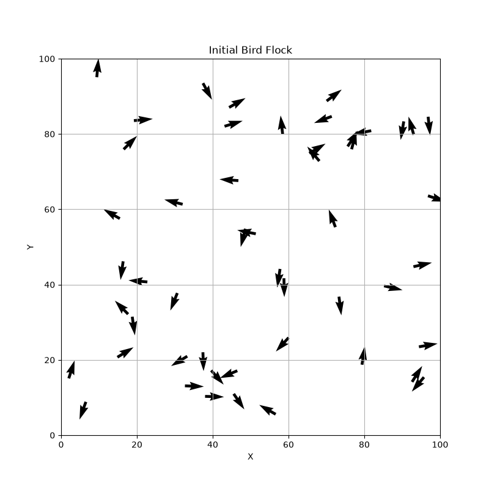
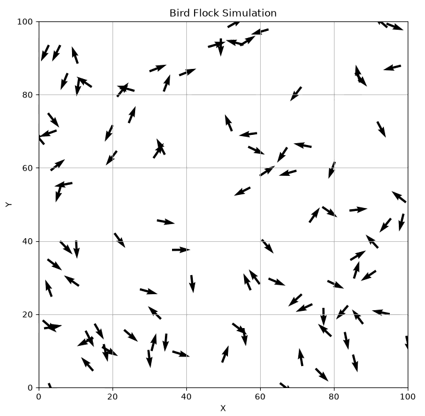
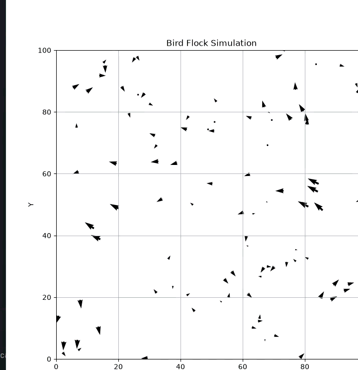
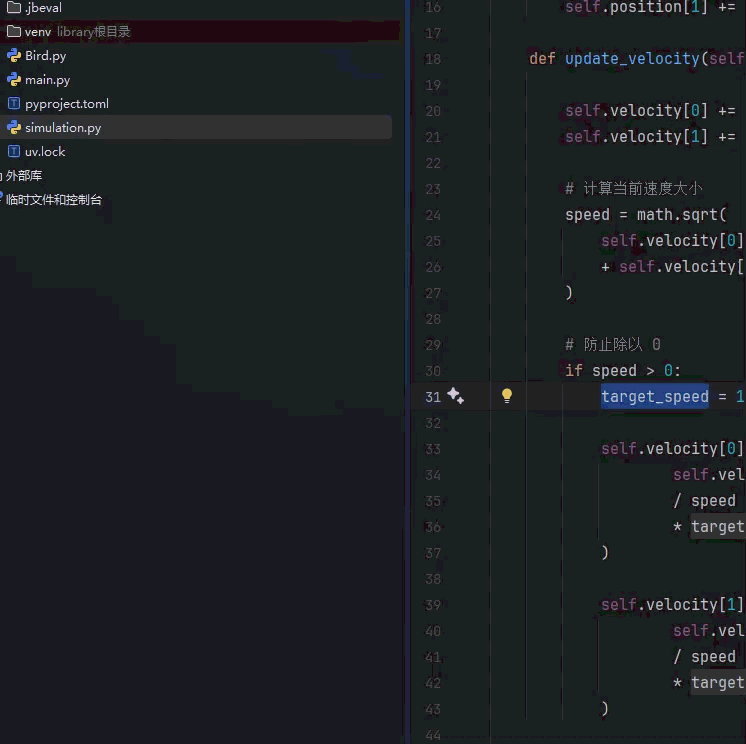
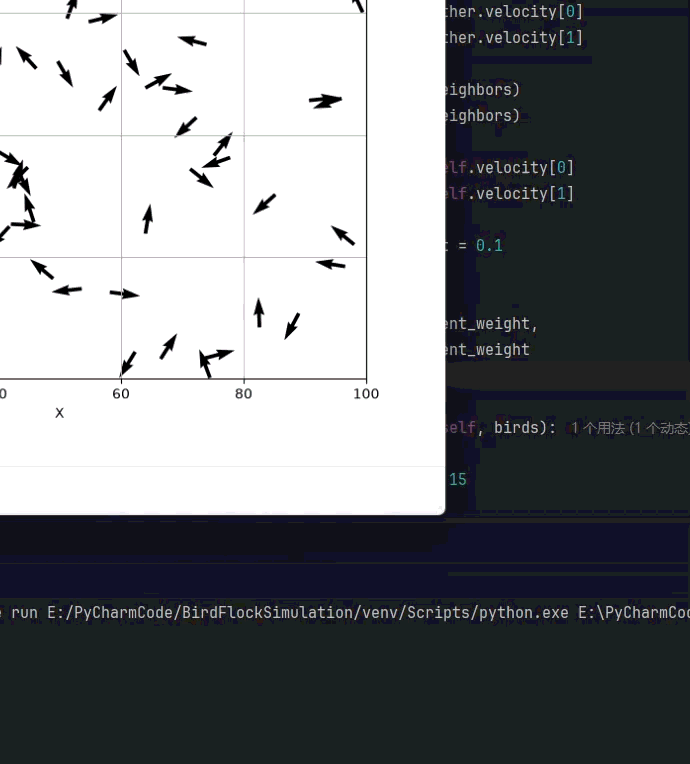
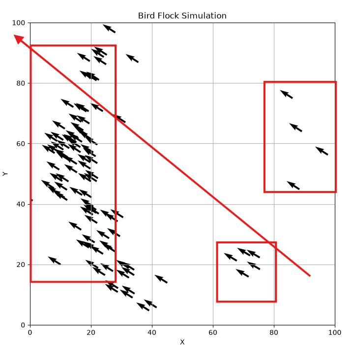
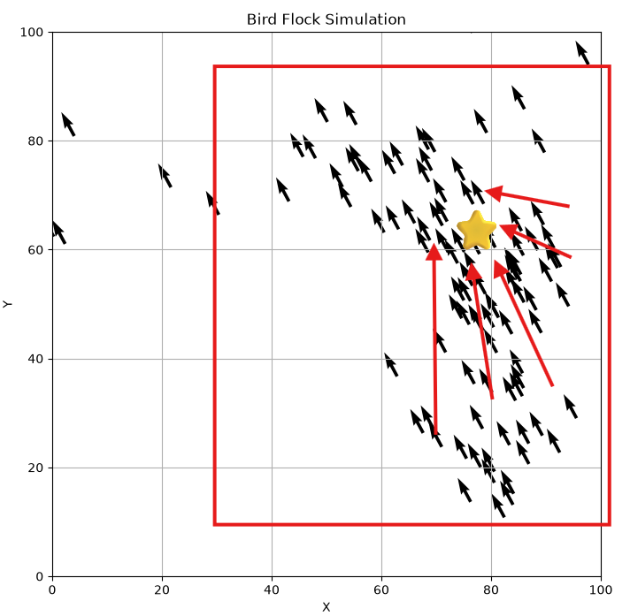
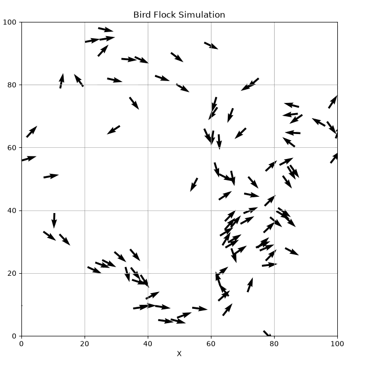
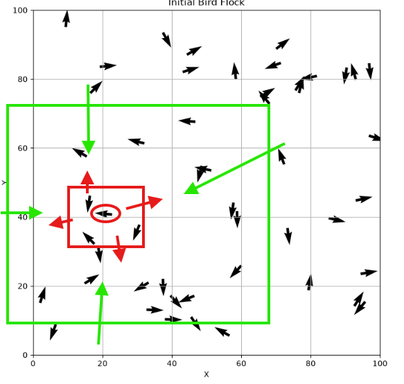
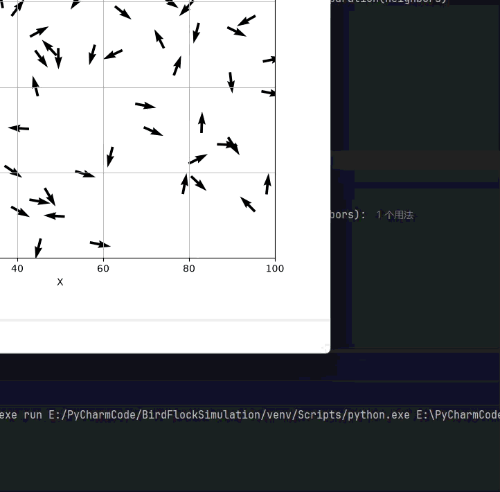

# 鸟群模拟
一个有意思的程序并不需要从复杂的算法开始，从前我喜欢研究一些策略模拟，比如怎么用最少的钱完成要求的事情，或者一些动态规划算法，在表中完成一步步推导，又或者一些企业级的工程化项目。
我常常望着天空发呆，看鸟群聚了又散，他们的轨迹是什么样的？想起来我的室友给我介绍过一次鱼群模拟，应该是在 Unity 中实现的的吧，是一个三维的模拟，我对这方面不太了解，但总之效果很炫酷，这次我想做一个很简单的小 demo，用 Python 模拟一群鸟在二维空间中的运动。
随便打了几下：
class Bird: | |
def __init__(self, position, velocity): | |
self.position = position | |
self.velocity = velocity | |
def update_position(self): | |
self.position[0] += self.velocity[0] | |
self.position[1] += self.velocity[1] | |
def update_velocity(self, acceleration): | |
decay_factor = 0.9 | |
self.velocity[0] = self.velocity[0] * decay_factor + acceleration[0] | |
self.velocity[1] = self.velocity[1] * decay_factor + acceleration[1] | |
def apply_behavior(self, birds): | |
pass |
import math | |
import random | |
from Bird import Bird | |
class Simulation: | |
def __init__(self, num_birds): | |
self.birds = [] | |
for _ in range(num_birds): | |
# 随机位置 | |
x = random.uniform(0, 100) | |
y = random.uniform(0, 100) | |
# 随机方向 | |
angle = random.uniform(0, 2 * math.pi) | |
vx = math.cos(angle) | |
vy = math.sin(angle) | |
bird = Bird( | |
[x, y], | |
[vx, vy] | |
) | |
self.birds.append(bird) | |
def update(self): | |
for bird in self.birds: | |
bird.update_position() | |
# 超出边界后，从另一侧重新出现 | |
bird.position[0] %= 100 | |
bird.position[1] %= 100 |
import matplotlib | |
matplotlib.use("TkAgg") | |
from matplotlib.animation import FuncAnimation | |
from simulation import Simulation | |
import matplotlib.pyplot as plt | |
from matplotlib.animation import FuncAnimation | |
from simulation import Simulation | |
simulation = Simulation(num_birds=100) | |
fig, ax = plt.subplots(figsize=(8, 8)) | |
ax.set_xlim(0, 100) | |
ax.set_ylim(0, 100) | |
ax.set_xlabel("X") | |
ax.set_ylabel("Y") | |
ax.set_title("Bird Flock Simulation") | |
ax.grid() | |
x = [bird.position[0] for bird in simulation.birds] | |
y = [bird.position[1] for bird in simulation.birds] | |
vx = [bird.velocity[0] for bird in simulation.birds] | |
vy = [bird.velocity[1] for bird in simulation.birds] | |
quiver = ax.quiver( | |
x, | |
y, | |
vx, | |
vy, | |
angles="xy", | |
scale_units="xy", | |
scale=0.2 | |
) | |
def animate(frame): | |
# 1. 更新所有鸟的位置 | |
simulation.update() | |
# 2. 获取新的位置 | |
x = [bird.position[0] for bird in simulation.birds] | |
y = [bird.position[1] for bird in simulation.birds] | |
vx = [bird.velocity[0] for bird in simulation.birds] | |
vy = [bird.velocity[1] for bird in simulation.birds] | |
# 3. 修改箭头位置 | |
quiver.set_offsets(list(zip(x, y))) | |
# 4. 修改箭头方向 | |
quiver.set_UVC(vx, vy) | |
return quiver, | |
animation = FuncAnimation( | |
fig, | |
animate, | |
interval=50, | |
blit=False, | |
cache_frame_data=False | |
) | |
plt.show() |
做出了如下的效果：

他们会自己动起来：

每一只鸟都有随机的位置，也有随机的飞行方向。它们彼此独立，各飞各的，整个画面看起来杂乱无章。
但真实世界中的鸟群并不是这样，当许多鸟聚集在一起时，它们会观察周围同伴的位置和运动方向，并不断调整自己的飞行状态。经过一段时间之后，原本混乱的个体会逐渐形成具有整体性的群体运动。
这其实是一个非常有意思的问题，如果每一只鸟都只遵守几个很简单的局部规则，能不能最终产生看起来非常复杂的群体行为？
让我们从零开始！
# 如何表示一只鸟？
程序里到底应该怎样表示一只鸟？
对于一只正在飞行的鸟来说，最核心的其实只有两个信息：
- 它现在在哪里
- 它现在往哪里飞
position 表示鸟当前的位置，而 velocity 表示鸟当前的飞行方向和速度。
因此，我们可以先定义一个最简单的 Bird 类：
class Bird: | |
def __init__(self, position, velocity): | |
self.position = position | |
self.velocity = velocity |
一只鸟就可以这样创建：
bird = Bird( | |
position=[30, 50], | |
velocity=[1, 0] | |
) |
鸟的运动，本质上就是不断根据速度更新位置，假设当前位置为：
position = [30, 50] |
速度为：
velocity = [1, 0.5] |
经过一个时间步之后，可以简单地写成：
position[0] += velocity[0] | |
position[1] += velocity[1] |
于是位置就会从：
[30, 50] |
变成：
[31, 50.5] |
这样，一只鸟就真正动起来了。
# 如何随机生成一群鸟？
如果所有鸟一开始都在同一个位置，并且朝着同一个方向飞，那么后面的群体行为其实没有太大意义。因为整个系统从一开始就是统一的，我们也看不到 “从混乱逐渐形成一致” 的过程。
鸟群初始化时最好满足两个条件：
- 鸟的位置是随机的
- 鸟的飞行方向也是随机的
假设我们的二维空间范围是：
X: 0 ~ 100 | |
Y: 0 ~ 100 |
那么一只鸟的位置可以随机生成：
x = random.uniform(0, 100) | |
y = random.uniform(0, 100) |
random.uniform(a, b) 会在 a 和 b 之间随机生成一个浮点数。
位置随机之后，还需要让每只鸟朝不同方向飞，这里有一种很方便的做法：先随机生成一个角度。
angle = random.uniform(0, 2 * math.pi) |
因为一个完整的圆对应：
所以随机生成一个这个范围内的角度，就相当于随机选择了一个飞行方向。
然后利用三角函数，把这个角度转换成二维速度：
vx = math.cos(angle) | |
vy = math.sin(angle) |
也就是：
比如，当：
时：
vx = 1 | |
vy = 0 |
鸟向右飞。
当角度随机变化时，鸟就可能朝任意方向飞行，虽然每只鸟的方向不同，但它们初始速度的大小都是一样的。
接下来，可以定义一个 Simulation 类，用来统一管理整个鸟群：
import math | |
import random | |
from Bird import Bird | |
class Simulation: | |
def __init__(self, num_birds): | |
self.birds = [] | |
for _ in range(num_birds): | |
# 随机位置 | |
x = random.uniform(0, 100) | |
y = random.uniform(0, 100) | |
# 随机飞行方向 | |
angle = random.uniform(0, 2 * math.pi) | |
vx = math.cos(angle) | |
vy = math.sin(angle) | |
bird = Bird( | |
[x, y], | |
[vx, vy] | |
) | |
self.birds.append(bird) |
这里根据 num_birds 数量生成鸟。
# 如何把鸟群可视化出来？
咱就用最简单的 Matplotlib 吧，但是因为每只鸟既有一个位置，又有一个飞行方向，所以单纯使用散点并不是特别合适。
plt.scatter(x, y) |
只能告诉我们鸟在哪里，鸟正在往哪里飞不知道。因此，这里使用 Matplotlib 提供的 quiver ，quiver 可以在二维坐标系中绘制带方向的箭头，它最核心的四个参数是：
plt.quiver( | |
x, | |
y, | |
vx, | |
vy | |
) |
这和之前定义的鸟类完全一样。那就让我们开始吧！
首先创建一个鸟群：
simulation = Simulation(num_birds=50) |
这时候：
simulation.birds |
里面保存了 50 个 Bird 对象。
分别取出所有鸟的横坐标：
x = [bird.position[0] for bird in simulation.birds] |
纵坐标：
y = [bird.position[1] for bird in simulation.birds] |
再取出速度在 X 方向上的分量：
vx = [bird.velocity[0] for bird in simulation.birds] |
以及 Y 方向上的分量：
vy = [bird.velocity[1] for bird in simulation.birds] |
这样就得到了绘图需要的四组数据：
x 鸟的横坐标 | |
y 鸟的纵坐标 | |
vx 水平方向速度 | |
vy 垂直方向速度 |
接下来创建一个画布：
fig, ax = plt.subplots(figsize=(8, 8)) |
并把模拟空间限制在：
ax.set_xlim(0, 100) | |
ax.set_ylim(0, 100) |
这正好和前面初始化鸟的位置范围保持一致：
x = random.uniform(0, 100) | |
y = random.uniform(0, 100) |
然后这样：
quiver = ax.quiver( | |
x, | |
y, | |
vx, | |
vy, | |
angles="xy", | |
scale_units="xy", | |
scale=0.2 | |
) |
完整的静态可视化代码如下：
import matplotlib.pyplot as plt | |
from simulation import Simulation | |
simulation = Simulation(num_birds=50) | |
x = [bird.position[0] for bird in simulation.birds] | |
y = [bird.position[1] for bird in simulation.birds] | |
vx = [bird.velocity[0] for bird in simulation.birds] | |
vy = [bird.velocity[1] for bird in simulation.birds] | |
fig, ax = plt.subplots(figsize=(8, 8)) | |
ax.set_xlim(0, 100) | |
ax.set_ylim(0, 100) | |
ax.set_xlabel("X") | |
ax.set_ylabel("Y") | |
ax.set_title("Bird Flock Simulation") | |
ax.grid(True) | |
ax.quiver( | |
x, | |
y, | |
vx, | |
vy, | |
angles="xy", | |
scale_units="xy", | |
scale=0.2 | |
) | |
plt.show() |
运行程序之后，我们就能第一次真正看到自己的鸟群。
这些鸟虽然已经被画出来了，但它们还不会动。下一步，就要让程序不断更新鸟的位置，并不断刷新画面，把这一张静态图片真正变成一个连续运动的鸟群动画。
# 如何让鸟群动起来？
对于一只鸟来说，如果当前位置是：
position = [30, 50] |
速度是：
velocity = [1, 0.5] |
那么经过一个时间步之后，它的位置就可以更新为：
position[0] += velocity[0] | |
position[1] += velocity[1] |
因此，可以在 Bird 类中加入一个 update_position() 方法：
class Bird: | |
def __init__(self, position, velocity): | |
self.position = position | |
self.velocity = velocity | |
def update_position(self): | |
self.position[0] += self.velocity[0] | |
self.position[1] += self.velocity[1] |
为了让模型尽量简单，可以先把每一帧看成一个固定时间步，因此暂时直接相加。
单只鸟可以移动之后，接下来就需要让 Simulation 负责统一更新所有鸟。
def update(self): | |
for bird in self.birds: | |
bird.update_position() |
每执行一次 update，整个鸟群都会向前移动一步。
现在还会遇到一个问题，我们的模拟区域是 100*100 的，如果一只鸟一直向右飞，它迟早会超过 100，一种很简单的处理方法是使用周期边界，鸟从右边飞出去，就从左边重新出现，和小时候玩那个贪吃蛇一样，我有时候就会去试试它有没有周期边界这个功能，虽然大多数都撞墙了哈哈哈哈。
实现也很简单，可以利用取模运算实现：
bird.position[0] %= 100 | |
bird.position[1] %= 100 |
因此 Simulation 中的更新函数可以写成：
def update(self): | |
for bird in self.birds: | |
bird.update_position() | |
bird.position[0] %= 100 | |
bird.position[1] %= 100 |
这样所有鸟都会一直留在我们的模拟空间中。
# 使用 FuncAnimation 创建动画
现在鸟已经可以移动了，但我们仍然需要不断刷新画面，这里可以使用 Matplotlib 提供的 FuncAnimation。
FuncAnimation 的作用可以简单理解为：每隔一段时间，自动调用一次我们指定的函数。
def animate(frame): | |
# 1. 更新所有鸟的位置 | |
simulation.update() | |
# 2. 获取新的位置 | |
x = [bird.position[0] for bird in simulation.birds] | |
y = [bird.position[1] for bird in simulation.birds] | |
vx = [bird.velocity[0] for bird in simulation.birds] | |
vy = [bird.velocity[1] for bird in simulation.birds] | |
# 3. 修改箭头位置 | |
quiver.set_offsets(list(zip(x, y))) | |
# 4. 修改箭头方向 | |
quiver.set_UVC(vx, vy) | |
return quiver, |
set_UVC() 的作用就是更新箭头的方向，然后这里这样做：
animation = FuncAnimation( | |
fig, | |
animate, | |
interval=50, | |
blit=False, | |
cache_frame_data=False | |
) |
完整代码：
import matplotlib | |
matplotlib.use("TkAgg") | |
from matplotlib.animation import FuncAnimation | |
from simulation import Simulation | |
import matplotlib.pyplot as plt | |
from matplotlib.animation import FuncAnimation | |
from simulation import Simulation | |
simulation = Simulation(num_birds=100) | |
fig, ax = plt.subplots(figsize=(8, 8)) | |
ax.set_xlim(0, 100) | |
ax.set_ylim(0, 100) | |
ax.set_xlabel("X") | |
ax.set_ylabel("Y") | |
ax.set_title("Bird Flock Simulation") | |
ax.grid() | |
x = [bird.position[0] for bird in simulation.birds] | |
y = [bird.position[1] for bird in simulation.birds] | |
vx = [bird.velocity[0] for bird in simulation.birds] | |
vy = [bird.velocity[1] for bird in simulation.birds] | |
quiver = ax.quiver( | |
x, | |
y, | |
vx, | |
vy, | |
angles="xy", | |
scale_units="xy", | |
scale=0.2 | |
) | |
def animate(frame): | |
# 1. 更新所有鸟的位置 | |
simulation.update() | |
# 2. 获取新的位置 | |
x = [bird.position[0] for bird in simulation.birds] | |
y = [bird.position[1] for bird in simulation.birds] | |
vx = [bird.velocity[0] for bird in simulation.birds] | |
vy = [bird.velocity[1] for bird in simulation.birds] | |
# 3. 修改箭头位置 | |
quiver.set_offsets(list(zip(x, y))) | |
# 4. 修改箭头方向 | |
quiver.set_UVC(vx, vy) | |
return quiver, | |
animation = FuncAnimation( | |
fig, | |
animate, | |
interval=50, | |
blit=False, | |
cache_frame_data=False | |
) | |
plt.show() |
到这里，一个最基础的二维鸟群运动系统就已经完成了，不过现在这些鸟之间仍然没有任何联系，仍然只是很多个独立个体的随机运动。
下一步，我们就要真正开始加入 “鸟群行为”：让每只鸟观察附近的同伴，并逐渐调整自己的飞行方向。
# 如何让鸟开始观察周围的同伴？
现实中的一只鸟并不会关注整个天空中的所有同伴，它通常只会对自己附近的一小部分个体作出反应。我们首先需要给每只鸟定义一个感知范围。
比如 VISION_RADIUS = 15，每只鸟只观察距离自己 15 个单位以内的其他鸟，以把它理解成一个以自己为圆心的圆。
假设当前两只鸟的位置是：
它们之间的距离可以通过二维欧氏距离计算：
例如：
Bird A = (10, 20) | |
Bird B = (13, 24) |
VISION_RADIUS = 15 |
5<15，所以 Bird B 就属于 Bird A 的邻居。因此，我们可以给 Bird 类增加一个方法：
def get_neighbors(self, birds, vision_radius): | |
neighbors = [] | |
for other in birds: | |
# 不观察自己 | |
if other is self: | |
continue | |
dx = other.position[0] - self.position[0] | |
dy = other.position[1] - self.position[1] | |
distance = (dx ** 2 + dy ** 2) ** 0.5 | |
if distance < vision_radius: | |
neighbors.append(other) | |
return neighbors |
neighbors 用来保存当前这只鸟附近的其他鸟，遍历整个鸟群当然他要排除自己。
接着计算：
dx = other.position[0] - self.position[0] | |
dy = other.position[1] - self.position[1] | |
distance = (dx ** 2 + dy ** 2) ** 0.5 |
得到欧氏距离，然后就判断：
if distance < vision_radius: | |
neighbors.append(other) |
是就加入邻居列表。
现在 Bird 类可以先写成：
class Bird: | |
def __init__(self, position, velocity): | |
self.position = position | |
self.velocity = velocity | |
def update_position(self): | |
self.position[0] += self.velocity[0] | |
self.position[1] += self.velocity[1] | |
def get_neighbors(self, birds, vision_radius): | |
neighbors = [] | |
for other in birds: | |
if other is self: | |
continue | |
dx = other.position[0] - self.position[0] | |
dy = other.position[1] - self.position[1] | |
distance = (dx ** 2 + dy ** 2) ** 0.5 | |
if distance < vision_radius: | |
neighbors.append(other) | |
return neighbors |
从现在开始，鸟群中的个体第一次真正建立了联系。
可以暂时在程序中选一只鸟测试：
bird = simulation.birds[0] | |
neighbors = bird.get_neighbors( | |
simulation.birds, | |
vision_radius=15 | |
) | |
print(len(neighbors)) |
输出是 5，说明有五个邻居。
# 如何让鸟逐渐统一飞行方向？Alignment 方向对齐
现在每只鸟虽然 “看见” 了周围的同伴，但仍然按照自己原来的方向飞行，我们要加入鸟群行为中的第一个核心规则：Alignment，方向对齐。
它的思想非常简单：一只鸟会观察附近其他鸟的飞行方向，然后逐渐调整自己的方向，使自己和周围鸟保持一致。
假设当前这只鸟附近有 3 个邻居它们的速度分别是：
Bird A: [1.0, 0.0] | |
Bird B: [0.8, 0.6] | |
Bird C: [0.0, 1.0] |
那么我们可以把它们的速度求平均：
得到：
平均速度大致指向右上，也就是说当前这只鸟周围的大多数邻居整体上正在向右上方飞，那么当前鸟也应该逐渐向这个方向调整。
最直接的写法当然可以是：
self.velocity = avg_velocity |
但是这样会产生一个问题，鸟会瞬间改变方向，这种转向会显得非常生硬，后面我会给你展示一下这个效果。
我们真正想要的是逐渐靠近邻居的平均方向，因此不是直接修改速度，而是先计算，当前速度和目标速度之间差多少。
假设当前鸟的速度是
邻居平均速度是
那么调整方向可以计算为
也就是
这个向量的含义并不是鸟的新速度，而是当前鸟应该怎样修改自己的速度：
水平方向稍微减小 | |
垂直方向增加 |
如果直接把整个调整量都加到速度上：
self.velocity[0] += ax | |
self.velocity[1] += ay |
实际上和之前的 self.velocity = avg_velocity 没有区别，所以我们再加入一个参数：ALIGNMENT_WEIGHT = 0.05
ax *= ALIGNMENT_WEIGHT | |
ay *= ALIGNMENT_WEIGHT |
这样每一次只调整一点点，会形成一条优雅的曲线。于是就有了这样的方法：
def alignment(self, neighbors): | |
if not neighbors: | |
return [0, 0] | |
avg_vx = 0 | |
avg_vy = 0 | |
for other in neighbors: | |
avg_vx += other.velocity[0] | |
avg_vy += other.velocity[1] | |
avg_vx /= len(neighbors) | |
avg_vy /= len(neighbors) | |
ax = avg_vx - self.velocity[0] | |
ay = avg_vy - self.velocity[1] | |
alignment_weight = 0.05 | |
return [ | |
ax * alignment_weight, | |
ay * alignment_weight | |
] |
如果没邻居就不用调整，有就计算邻居的平均方向，计算调整量然后乘上系数。接下来，可以把前面写的 get_neighbors() 和 alignment() 串起来
def apply_behavior(self, birds): | |
vision_radius = 15 | |
neighbors = self.get_neighbors( | |
birds, | |
vision_radius | |
) | |
acceleration = self.alignment( | |
neighbors | |
) | |
return acceleration |
apply_behavior 就是观察周围邻居，计算自己应该如何转向，返回速度调整量。
然后再给 Bird 加一个：
def update_velocity(self, acceleration): | |
self.velocity[0] += acceleration[0] | |
self.velocity[1] += acceleration[1] |
然后在 Simulation 中：
def update(self): | |
accelerations = [] | |
# 先计算所有鸟的调整量 | |
for bird in self.birds: | |
acceleration = bird.apply_behavior( | |
self.birds | |
) | |
accelerations.append(acceleration) | |
# 再统一更新速度和位置 | |
for bird, acceleration in zip( | |
self.birds, | |
accelerations | |
): | |
bird.update_velocity(acceleration) | |
bird.update_position() | |
bird.position[0] %= 100 | |
bird.position[1] %= 100 |

加入 Alignment 后，我发现鸟群虽然开始逐渐统一方向，但整个鸟群的移动速度也明显下降了。当多个速度方向不一致时，不同方向的向量会相互抵消，使平均速度的模长减小。因此，当前鸟在向邻居平均速度靠近的同时，也在不断降低自己的速度。因此每次速度更新后，使鸟只改变方向，而保持固定的飞行速度。
def update_velocity(self, acceleration): | |
self.velocity[0] += acceleration[0] | |
self.velocity[1] += acceleration[1] | |
# 计算当前速度大小 | |
speed = math.sqrt( | |
self.velocity[0] ** 2 | |
+ self.velocity[1] ** 2 | |
) | |
# 防止除以 0 | |
if speed > 0: | |
target_speed = 1.0 | |
self.velocity[0] = ( | |
self.velocity[0] | |
/ speed | |
* target_speed | |
) | |
self.velocity[1] = ( | |
self.velocity[1] | |
/ speed | |
* target_speed | |
) |
这里是保持方向不变，把向量长度缩放到 1。

通过加大 alignment_weight，可以加速方向的调整：

# 如何让鸟群保持在一起？Cohesion 聚集规则
Alignment 之后，每只鸟会观察附近邻居的飞行方向，并逐渐调整自己的速度方向，可以看到，鸟群的方向开始逐渐统一，继续运行一段时间之后，又会发现一个新的问题，虽然大家飞行方向越来越接近，但是鸟和鸟之间仍然可能离得很远。

这时候它们虽然都在往相似的方向飞，但从视觉上看，并不像一个真正的鸟群，因此，我们还需要加入第二条规则：Cohesion，聚集。
Cohesion 的思路是，一只鸟会观察附近邻居的位置，然后稍微朝这些邻居的中心靠近，假设当前鸟周围有三只邻居，它们的位置分别是：
Bird A: [20, 30] | |
Bird B: [30, 40] | |
Bird C: [40, 50] |
那么这些邻居的中心位置，就是它们位置的平均值 [30, 40]，也许 [30, 40] 并不存在真实的一只鸟，但是他们就是会向这个逻辑中心靠近。

假设当前这只鸟的位置是 [20, 20]，邻居中心是 [30, 40]，那么从当前鸟指向邻居中心的方向就是：
dx = 30 - 20 | |
dy = 40 - 20 |
得到：
dx = 10 | |
dy = 20 |
我们希望当前鸟稍微朝右上方调整，当然，我们也可以直接让鸟：
velocity = center - position |
但是这样会产生非常强烈的聚集效果，鸟会迅速冲向邻居中心，整个运动会显得很生硬。Alignment 一样，我们仍然希望它只是 Alignment 一样，我们仍然希望它只是稍微靠近一点。同样需要一个权重 cohesion_weight = 0.01
然后：
dx *= cohesion_weight | |
dy *= cohesion_weight |
在 Bird 类中加入：
def cohesion(self, neighbors): | |
if not neighbors: | |
return [0, 0] | |
center_x = 0 | |
center_y = 0 | |
for other in neighbors: | |
center_x += other.position[0] | |
center_y += other.position[1] | |
center_x /= len(neighbors) | |
center_y /= len(neighbors) | |
dx = center_x - self.position[0] | |
dy = center_y - self.position[1] | |
cohesion_weight = 0.01 | |
return [ | |
dx * cohesion_weight, | |
dy * cohesion_weight | |
] |
接下来需要把这两个调整量合起来，修改 apply_behavior。
def apply_behavior(self, birds): | |
neighbors = self.get_neighbors( | |
birds, | |
vision_radius=15 | |
) | |
alignment = self.alignment(neighbors) | |
cohesion = self.cohesion(neighbors) | |
return [ | |
alignment[0] + cohesion[0], | |
alignment[1] + cohesion[1] | |
] |
这里其实就是把两个规则产生的 “转向量” 相加。

Cohesion 一直在告诉每只鸟，往中间靠，但所有鸟挤在非常小的区域里，这显然也不符合我们想要的效果，所以接下来，我们还需要加入第三条核心规则：所以接下来，我们还需要加入第三条核心规则：Separation，分离
# 如何让鸟彼此保持距离？Separation 分离规则
到现在为止，鸟群已经开始表现出比较明显的集体运动，它们会逐渐朝相似的方向飞，并且慢慢靠近彼此。但是继续运行一段时间之后，会发现一个新的问题，鸟会越来越靠近，甚至挤在一起。
所以我们需要加入第三条规则：**Separation，分离。** 它的作用就是当两只鸟距离太近时，让它们互相远离
# Separation 要单独设置一个距离
前面的邻居感知范围可能是：
vision_radius = 15 |
也就是说，15 个单位以内的鸟，我都可以观察，但是并不是所有邻居都需要避开。
但如果距离只有 2，就明显太近了，因此可以额外定义一个 separation_radius = 5，那么这个范围以内的，需要远离。

def separation(self, neighbors): | |
move_x = 0 | |
move_y = 0 | |
separation_radius = 5 | |
for other in neighbors: | |
dx = self.position[0] - other.position[0] | |
dy = self.position[1] - other.position[1] | |
distance = (dx ** 2 + dy ** 2) ** 0.5 | |
if 0 < distance < separation_radius: | |
move_x += dx | |
move_y += dy | |
separation_weight = 0.05 | |
return [ | |
move_x * separation_weight, | |
move_y * separation_weight | |
] |
这个就能实现分离 if 0 < distance < separation_radius，在这个之间的的，就需要推远，return 的永远是修正量。但还有一个可以改进的地方但还有一个可以改进的地方。现实中距离 4 和距离 0.5，显然不应该产生一样强的排斥。越近，避让应该越强，所以可以把距离考虑进去：
move_x += dx / (distance ** 2) | |
move_y += dy / (distance ** 2) |
就变成了这样：
def separation(self, neighbors): | |
move_x = 0 | |
move_y = 0 | |
separation_radius = 5 | |
for other in neighbors: | |
dx = self.position[0] - other.position[0] | |
dy = self.position[1] - other.position[1] | |
distance = (dx ** 2 + dy ** 2) ** 0.5 | |
if 0 < distance < separation_radius: | |
move_x += dx / (distance ** 2) | |
move_y += dy / (distance ** 2) | |
separation_weight = 0.08 | |
return [ | |
move_x * separation_weight, | |
move_y * separation_weight | |
] |
现在，一只鸟已经拥有三种行为：
Alignment | |
Cohesion | |
Separation |
修改 apply_behavior：
def apply_behavior(self, birds): | |
neighbors = self.get_neighbors( | |
birds, | |
vision_radius=15 | |
) | |
alignment = self.alignment(neighbors) | |
cohesion = self.cohesion(neighbors) | |
separation = self.separation(neighbors) | |
return [ | |
alignment[0] | |
+ cohesion[0] | |
+ separation[0], | |
alignment[1] | |
+ cohesion[1] | |
+ separation[1] | |
] |
现在可以把它们放在一起理解：
- Alignment 跟大家往差不多的方向飞
- Cohesion 别离大家太远
- Separation 但也别贴得太近

有意思的是，我们从来没有定义谁是领头鸟，也没有告诉系统整个鸟群必须排成什么形状，每一只鸟都只是在根据自己附近的邻居执行几个非常简单的规则。但是当大量个体同时执行这些规则时，却能够出现这样的复杂群体行为。后续只要我们细微的调整这三个权重，他就会越来越像。
这只是一次初步探索，制作的较为粗糙，意在满足我对这个鸟群模拟的好奇。
# AI 还是太好用了
import math | |
import time | |
import tkinter as tk | |
import numpy as np | |
from PIL import Image, ImageChops, ImageDraw, ImageFilter, ImageTk | |
WIDTH, HEIGHT = 900, 760 | |
BIRD_COUNT = 230 | |
SPEED = 2.0 | |
VISION_RADIUS = 85 | |
SEPARATION_RADIUS = 24 | |
ALIGNMENT = 0.055 | |
COHESION = 0.0025 | |
SEPARATION = 1.4 | |
TRAIL_RETENTION = 238 # 0~254：越大，拖尾越长。 | |
GLOW_RADIUS = 3 # 在缩小为 1/3 的图像上模糊。 | |
BACKGROUND = (4, 9, 19) | |
class Flock: | |
def __init__(self, count=BIRD_COUNT, seed=None): | |
rng = np.random.default_rng(seed) | |
self.position = rng.uniform([90, 90], [WIDTH - 90, HEIGHT - 90], (count, 2)) | |
angles = rng.uniform(0, 2 * np.pi, count) | |
self.velocity = np.column_stack((np.cos(angles), np.sin(angles))) * SPEED | |
def step(self, mode=4): | |
p, v = self.position, self.velocity | |
delta = p[None, :, :] - p[:, None, :] | |
distance_squared = np.sum(delta ** 2, axis=2) | |
neighbors = (distance_squared < VISION_RADIUS ** 2) | |
np.fill_diagonal(neighbors, False) | |
counts = neighbors.sum(axis=1, keepdims=True) | |
safe_counts = np.maximum(counts, 1) | |
acceleration = np.zeros_like(v) | |
if mode >= 2: | |
alignment = neighbors @ v / safe_counts - v | |
acceleration += alignment * (counts > 0) * ALIGNMENT | |
if mode >= 3: | |
toward_center = (delta * neighbors[:, :, None]).sum(axis=1) / safe_counts | |
acceleration += toward_center * COHESION | |
if mode >= 4: | |
close = (distance_squared < SEPARATION_RADIUS ** 2) & neighbors | |
repulsion = (delta * (close / np.maximum(distance_squared, 1))[:, :, None]).sum(axis=1) | |
acceleration -= repulsion * SEPARATION | |
# 靠近窗口边缘时平滑转向。 | |
for axis, boundary in enumerate((WIDTH, HEIGHT)): | |
acceleration[:, axis] += np.maximum(0, 95 - p[:, axis]) * 0.003 | |
acceleration[:, axis] -= np.maximum(0, p[:, axis] - (boundary - 95)) * 0.003 | |
updated = v + acceleration | |
length = np.linalg.norm(updated, axis=1, keepdims=True) | |
updated = np.where(length > 1e-8, updated / np.maximum(length, 1e-8) * SPEED, v) | |
self.velocity = updated | |
self.position = p + updated | |
# 极端情况下反射越界速度，避免个体被卡在边缘。 | |
for axis, boundary in enumerate((WIDTH, HEIGHT)): | |
hit = (self.position[:, axis] < 8) | (self.position[:, axis] > boundary - 8) | |
self.velocity[hit, axis] *= -1 | |
self.position[:, axis] = np.clip(self.position[:, axis], 8, boundary - 8) | |
class Renderer: | |
def __init__(self): | |
self.background = Image.new('RGB', (WIDTH, HEIGHT), BACKGROUND) | |
self.fade = Image.new('RGB', (WIDTH, HEIGHT), (TRAIL_RETENTION,) * 3) | |
self.clear() | |
def clear(self): | |
self.trail = Image.new('RGB', (WIDTH, HEIGHT)) | |
def draw(self, flock, t): | |
self.trail = ImageChops.multiply(self.trail, self.fade) | |
trail_draw = ImageDraw.Draw(self.trail) | |
heads = Image.new('RGB', (WIDTH, HEIGHT)) | |
head_draw = ImageDraw.Draw(heads) | |
for i, (position, velocity) in enumerate(zip(flock.position, flock.velocity)): | |
# RGB：青蓝与淡紫缓慢流动。修改这里即可改变配色。 | |
blend = (math.sin(i * 0.17 + t * 0.07) + 1) / 2 | |
color = (int(79 + 70 * blend), int(177 + 58 * (1 - blend)), 248) | |
x, y = position | |
dx, dy = velocity / SPEED | |
trail_draw.line((x - dx * 4, y - dy * 4, x, y), | |
fill=tuple(int(c * 0.6) for c in color), width=2) | |
head_draw.polygon([ | |
(x + dx * 5, y + dy * 5), | |
(x - dx * 3 - dy * 2, y - dy * 3 + dx * 2), | |
(x - dx * 2, y - dy * 2), | |
(x - dx * 3 + dy * 2, y - dy * 3 - dx * 2), | |
], fill=color) | |
# 缩小后模糊再放大，得到柔和光晕。 | |
glow = ImageChops.add(self.trail, heads).resize((WIDTH // 3, HEIGHT // 3)) | |
glow = glow.filter(ImageFilter.GaussianBlur(GLOW_RADIUS)) | |
glow = glow.resize((WIDTH, HEIGHT), Image.Resampling.BILINEAR) | |
image = ImageChops.add(self.background, glow) | |
image = ImageChops.add(image, self.trail) | |
return ImageChops.add(image, heads) | |
def main(): | |
root = tk.Tk() | |
root.title('发光鸟群 | Space 暂停 · R 重置 · 1–4 切换规则 · Esc 退出') | |
root.resizable(False, False) | |
canvas = tk.Canvas(root, width=WIDTH, height=HEIGHT, highlightthickness=0) | |
canvas.pack() | |
canvas_image = canvas.create_image(0, 0, anchor='nw') | |
state = {'flock': Flock(), 'mode': 4, 'paused': False, 'time': 0.0} | |
renderer = Renderer() | |
status = tk.StringVar() | |
tk.Label(root, textvariable=status, bg='#040913', fg='#a9dce7', pady=8).pack(fill='x') | |
def update_status(): | |
names = {1: '随机飞行', 2: '方向对齐', 3: '对齐 + 聚集', 4: '对齐 + 聚集 + 分离'} | |
status.set(f"{BIRD_COUNT} 只鸟 | {names[state['mode']]} | " | |
f"{'已暂停' if state['paused'] else '运行中'} | Space 暂停 / R 重置 / 1–4 规则 / Esc 退出") | |
def key(event): | |
k = event.keysym.lower() | |
if k == 'escape': | |
root.destroy() | |
return | |
if k == 'space': | |
state['paused'] = not state['paused'] | |
elif k == 'r': | |
state['flock'] = Flock() | |
renderer.clear() | |
state['time'] = 0.0 | |
elif k in ('1', '2', '3', '4'): | |
state['mode'] = int(k) | |
update_status() | |
def tick(): | |
start = time.perf_counter() | |
if not state['paused']: | |
state['flock'].step(state['mode']) | |
state['time'] += 1 / 30 | |
image = renderer.draw(state['flock'], state['time']) | |
photo = ImageTk.PhotoImage(image) | |
canvas.itemconfigure(canvas_image, image=photo) | |
canvas.photo = photo # 保持引用，防止图片被回收。 | |
elapsed_ms = (time.perf_counter() - start) * 1000 | |
root.after(max(1, int(1000 / 30 - elapsed_ms)), tick) | |
root.bind('<KeyPress>', key) | |
update_status() | |
tick() | |
root.mainloop() | |
if __name__ == '__main__': | |
main() |